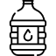

<!--
  Generated template for the HydrationPage page.

  See http://ionicframework.com/docs/components/#navigation for more info on
  Ionic pages and navigation.
-->
<ion-header>

  <ion-navbar color="primary">
    <button ion-button menuToggle>
      <ion-icon name="menu"></ion-icon>
    </button>
    <ion-title>Your Hydration</ion-title>
    <ion-buttons end>
      <button ion-button icon-only (click)="presentPopover($event)">
        <ion-icon name="add-circle"></ion-icon>
      </button>
    </ion-buttons>
  </ion-navbar>

</ion-header>


<ion-content padding>
  <ion-card>
    <ion-card-header>
      Your weeks hydration
    </ion-card-header>
    <ion-card-content>
      <canvas #lineCanvas></canvas>
    </ion-card-content>
  </ion-card>
  <br>
  <br>
  <br>
  <div class="row">
    <div id="smallwater">
      
      <ion-label>
        <ion-icon name="add-circle-outline"></ion-icon>
        (8 oz)
      </ion-label>
    </div>
    <div id="water">
      
      <ion-label>
        <ion-icon name="add-circle-outline"></ion-icon>
        (12 oz)
      </ion-label>
    </div>
    <div id="bigwater">
      
      <ion-label>
        <ion-icon name="add-circle-outline"></ion-icon>
        (24 oz)
      </ion-label>
    </div>
  </div>
</ion-content>
